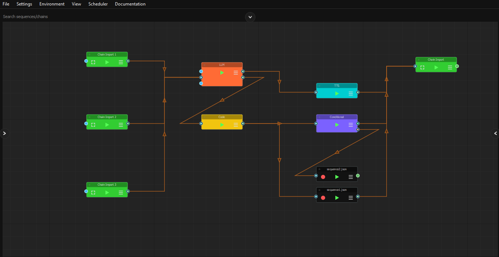
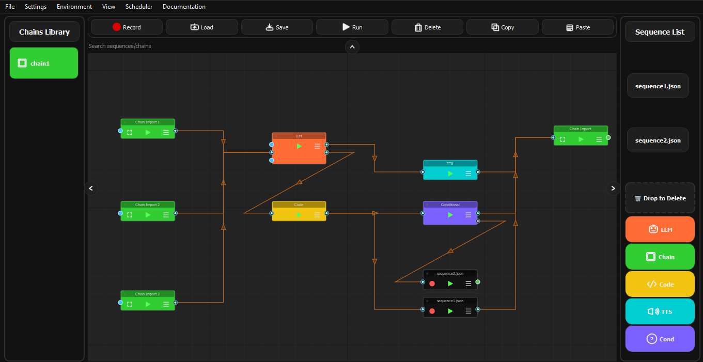
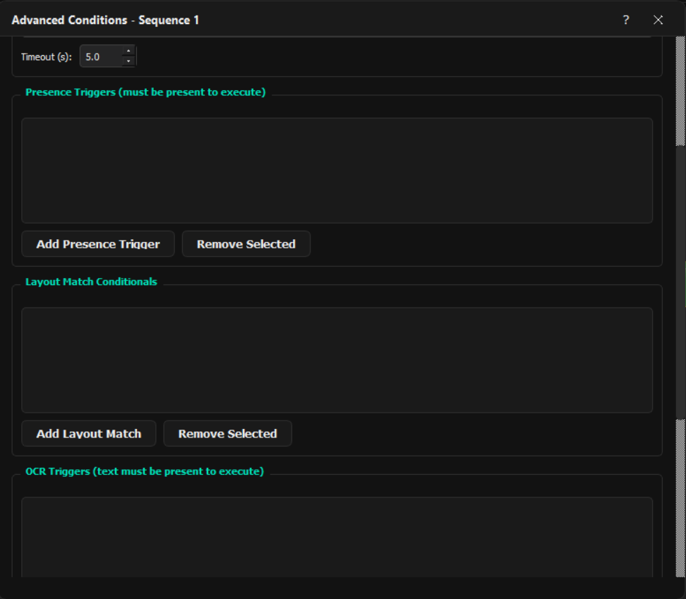
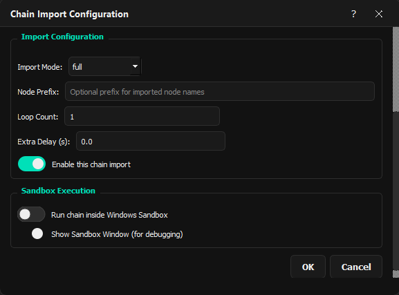
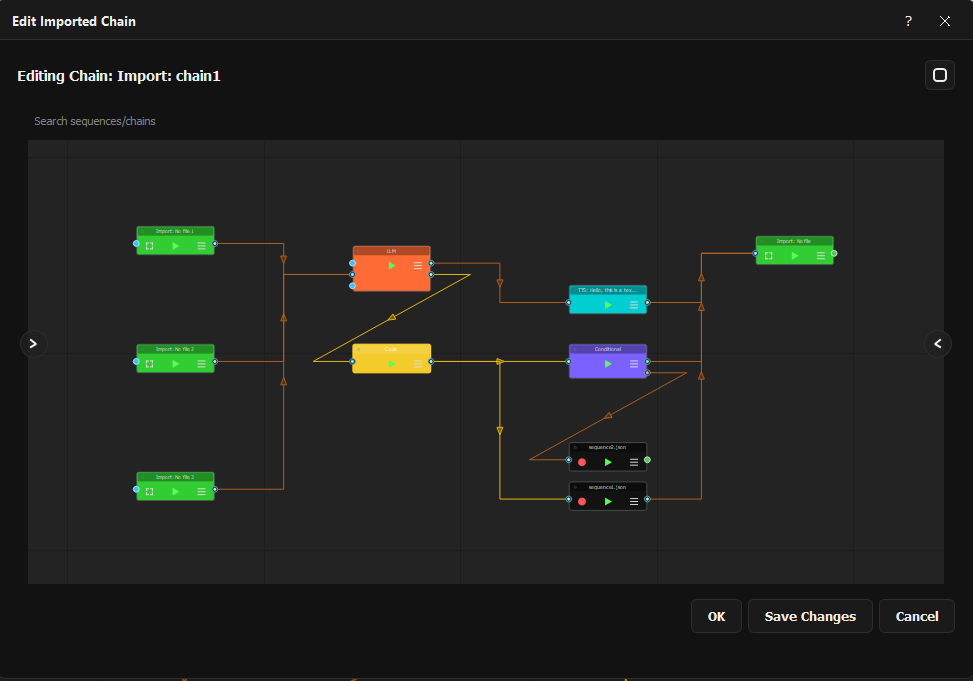
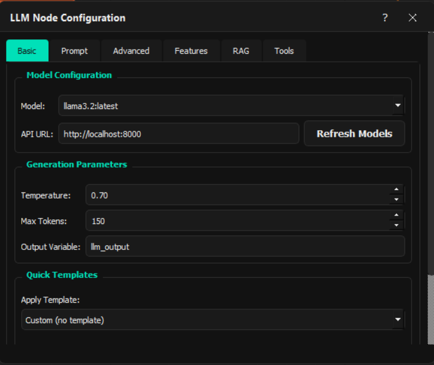
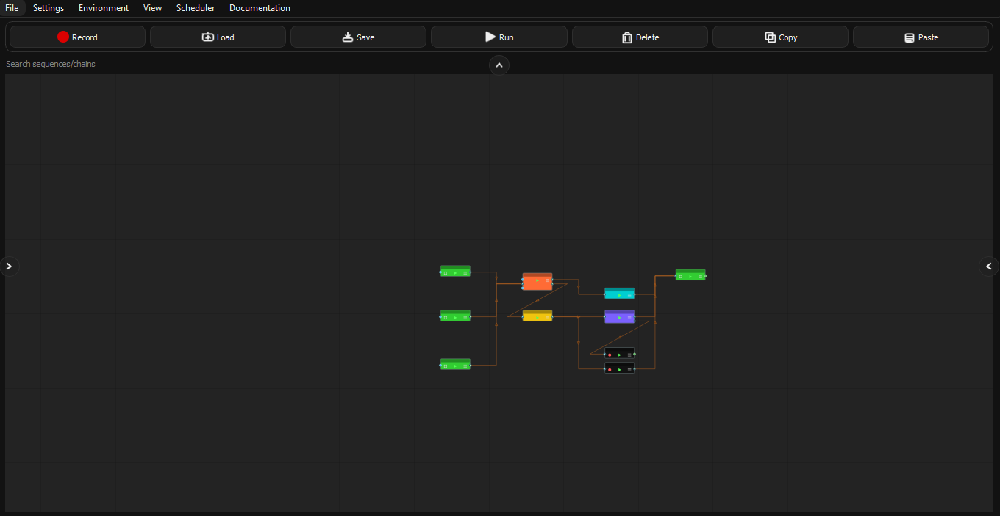

About LoOper
LoOper is a high-efficiency automation engine designed to build complex agents that run with minimal resources. By combining a deterministic set of tools with strategic AI, LoOper offloads the heavy lifting from LLMs to local, pre-validated action chains.
Overview
LoOper redefines desktop automation by separating AI decision-making from action execution:
🎨 NGUI
Visual node-based workflow designer for building secure automation chains
📹 Recorder
Capture precise human actions to create deterministic behavioral knowledge base
▶️ Player
Execute workflows with visual validation, minimal LLM calls, and full audit trail
🧠 LLM Nodes
Strategic decision points that select from pre-built action sequences
Key Features
Agent Builder & Neuro-Symbolic Graphs
Build secure automation agents where LLMs make high-level decisions from pre-defined action chains. Create deterministic workflow graphs that combine neural (LLM) and symbolic (recorded chains) intelligence for reliable, auditable automation.
Minimal LLM Dependency
LLMs act as strategic selectors - choosing which pre-built action sequence to execute next. The actual work is done by recorded, validated chains that interact directly with applications, reducing LLM calls to decision points only.
Human-in-the-Loop Design
All action workflows are built from manually recorded, monitored sequences. LLMs never execute raw actions - they choose from human-validated behavioral knowledge base, ensuring safety and predictability.
Visual Template Matching & Validation
Recorded sequences use computer vision for reliable UI element detection with fallback mechanisms. Each action is visually validated during execution, creating a secure automation layer.
Strategic LLM Integration
Use LLMs for workflow planning and decision making, screen analysis and content understanding, natural language command interpretation, dynamic parameter selection for pre-built actions, and error recovery with adaptive workflow selection.
Scheduler & Secure Sandboxing
Schedule workflows and execute them in isolated environments. The agent builder approach ensures predictable behavior even in automated scenarios.
Extensible Knowledge Base
Grow your automation capabilities by recording new action sequences. Each recording adds to your agent's behavioral knowledge base that LLMs can leverage for decision making.
Use Cases
Secure Business Process Automation
Build auditable automation agents for finance, HR, and operations where LLMs make routing decisions from pre-validated action chains. Each action is a recorded, monitored sequence ensuring compliance and reliability.
Intelligent Application Testing
Create testing agents where LLMs analyze test results and select appropriate test sequences from your behavioral knowledge base. Combines AI-driven test planning with deterministic execution.
Adaptive IT Operations
Develop operations agents that monitor system states and execute predefined maintenance, deployment, or troubleshooting sequences based on LLM analysis - reducing manual intervention while maintaining control.
Cognitive Content Processing
Build content processing agents where LLMs understand and categorize content, then select appropriate processing workflows from your recorded action library for document handling, image processing, or data transformation.
Personal Productivity Agents
Create personal assistants that learn your habits through recorded sequences, then use LLMs to intelligently select and automate routines based on context, time, or priority - all while keeping actions human-verified.
Technical Highlights
Neuro-Symbolic Agent Architecture
- Symbolic Layer: Recorded, validated action chains that interact directly with applications
- Neural Layer: LLMs that make strategic decisions from pre-built action options
- Interface: Clean separation where LLMs never execute raw actions, only select from human-validated sequences
Deterministic Action Execution
- All application interactions happen through recorded, monitored sequences
- Zero LLM involvement in mouse/keyboard execution - pure recorded behavior
- Visual template matching with fallback mechanisms for reliable UI interaction
- Action validation and audit trail for every execution step
Strategic LLM Usage (Minimal Calls)
- LLMs activated only at decision points in workflow
- Typical usage: Analyze screen → Select next action sequence → Execute recorded chain
- Reduces LLM calls by 90%+ compared to traditional LLM-driven automation
- Local Ollama support ensures privacy and offline capability
Behavioral Knowledge Base
- Each recorded sequence adds to your agent's action library
- LLMs learn to associate screen states with appropriate action sequences
- Knowledge base grows organically through human demonstration
- Enables transfer learning across similar applications and workflows
Secure Workflow Design
- Human-in-the-loop recording ensures all actions are pre-validated
- Sandbox execution isolates workflows from host system
- Comprehensive logging and monitoring of all LLM decisions and action executions
- Fail-safe mechanisms: LLMs can only choose from pre-defined, safe action options
Advanced Recording Intelligence
- Smart grouping: Scroll bursts, text sequences, modifier combinations
- Automatic screenshot capture for visual validation during playback
- Drag-and-drop detection with configurable thresholds
- Context-aware recording (active application, window focus)
Visual Workflow Management
- Drag-and-drop node editor for building agent workflows
- Conditional routing based on LLM decisions or screen state
- Loop controls with exit conditions and iteration limits
- Sub-workflow composition for knowledge base organization
Screenshots & Demo








Why Choose LoOper?
✅ User-Friendly
Visual interface means no coding required for basic automation tasks
✅ Powerful Features
Computer vision, AI integration, and advanced workflow controls
✅ Flexible & Extensible
Modular architecture allows customization and extension
✅ Reliable Execution
Fallback mechanisms and error recovery for robust automation
✅ Local-First Design
AI models run locally for privacy and offline capability
✅ Active Development
Regular updates and community support
Support & Community
- Documentation: Comprehensive user guide and API reference
- Community: Join our forums and Discord for discussions
- Support: Visit our Contact page for assistance
Ready to Automate?
Transform desktop automation from simple macro recording to intelligent, visual, AI-powered workflow orchestration.